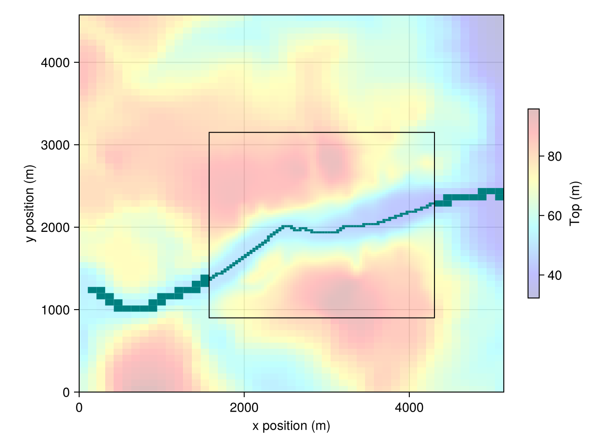
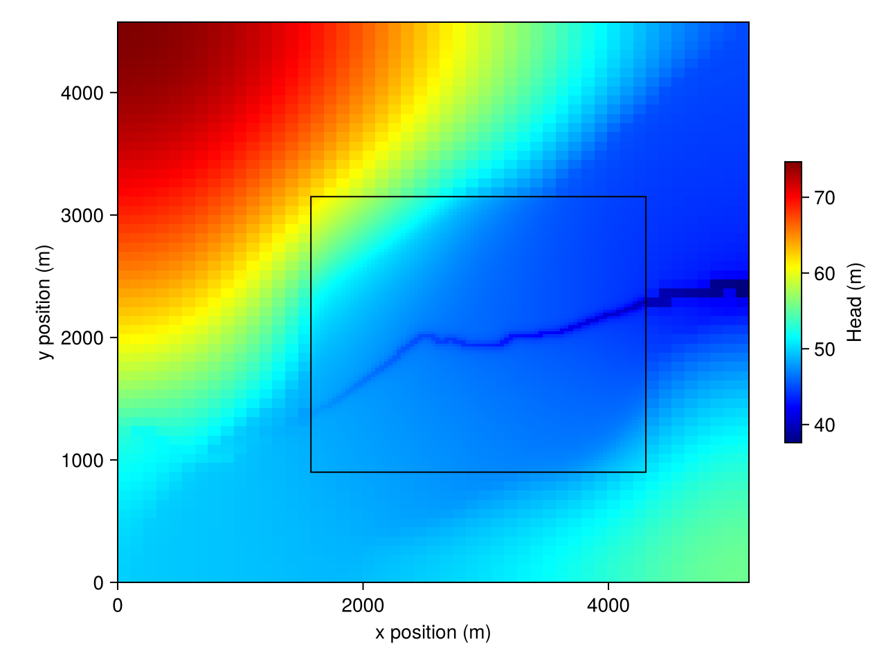
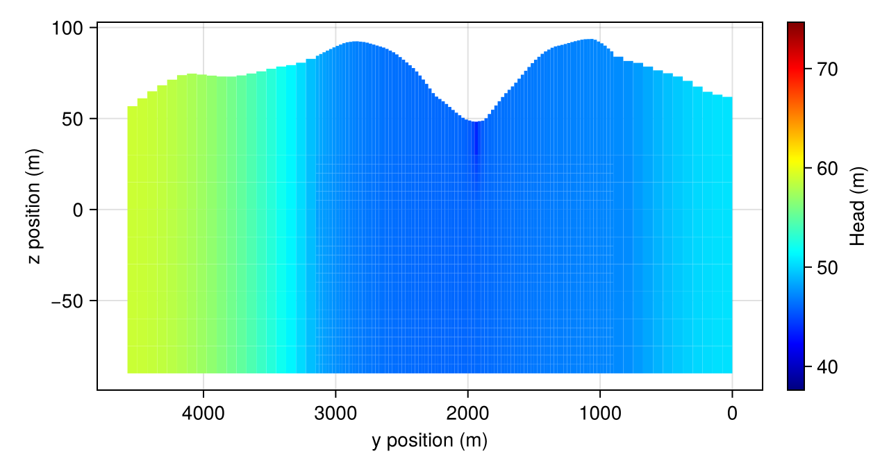
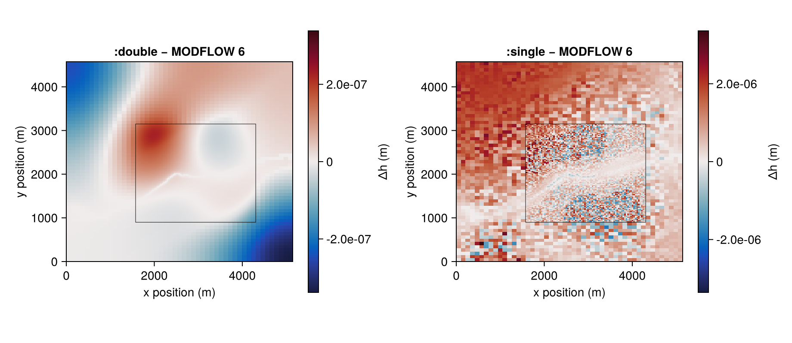

A valley aquifer with a refined child model
The coarse model of the buried valley aquifer of the paper on local grid refinement in MODFLOW by Vilhelmsen and others (2012), with a refined model inside it, coupled by a GWF–GWF exchange: local grid refinement. The parent model is the coarse model of the page A valley aquifer with a river: 9 layers of 61 × 49 cells of 105 m × 75 m. The child model has 25 layers of 90 × 78 cells of 35 m × 25 m (the refined model of the refined model page over the valley), with its origin at (1575 m, 900 m), and replaces the parent cells beneath it (IDOMAIN 0 there). Both models have RIV and RCH packages. The exchange has 8400 connections, with ANGLDEGX and CDIST, and is solved together with both models by one IMS solution, which ModflowGPU does as one system of equations. Units are metres and seconds.
This is the MODFLOW 6 example ex-gwf-lgrv version ex-gwf-lgrv-lgr.
Input and the MODFLOW 6 run
ExampleTools (docs/ExampleTools.jl in the repository) takes the input from the released mf6examples.zip, sets the tight closures of the parity tests in the IMS file, and runs MODFLOW 6.8.2.
using ModflowGPU, CairoMakie
mf6 = example_run("ex-gwf-lgrv-lgr")
mf6.mode, mf6.mf6_time("tight", 4.711847998)The ModflowGPU run
In :double precision with the default options, and in :single precision with the AMG preconditioner (as for the other two versions of this example: Float32 with the default preconditioner stops further from the exact heads on this badly conditioned steady state; see What the presets mean for accuracy).
runs = Dict(:double => run_modflowgpu(mf6.dir, :double), :single => run_modflowgpu(mf6.dir, :single; preconditioner = :amg))
r = runs[:double].result
r.converged, [m.name => length(m.nodes) for m in r.models](true, ["PARENT" => 19881, "CHILD" => 175500])The models
The land surface of both models with the river cells (RIV, from ModflowGPU's budget files). The child model (outlined) replaces the parent cells beneath it, which are inactive.
names = ("parent", "child")
grids = [read_dis_grid(mf6.dir; model = n) for n in names]
mfile(run, n, f) = getfield(only(filter(m -> m.name == uppercase(n), run.result.models)), f)
tops = [[g.idomain[c, r, 1] > 0 ? g.top[c, r] : NaN for c in 1:g.ncol, r in 1:g.nrow] for g in grids]
fig = Figure(; size = (640, 480))
ax = Axis(fig[1, 1]; aspect = DataAspect(), xlabel = "x position (m)", ylabel = "y position (m)")
hm = models_heatmap!(ax, grids, tops; colormap = (:jet, 0.25))
for (g, n) in zip(grids, names)
map_cells!(ax, g, budget_cells(g, mfile(runs[:double], n, :budget_file), "RIV"); color = BC_COLORS["RIV"])
end
map_outline!(ax, grids[2]; color = :black)
limits!(ax, extrema(grids[1].xe)..., extrema(grids[1].ye)...)
Colorbar(fig[1, 2], hm; label = "Top (m)", height = Relative(0.5))
save_figure(fig, "ex-gwf-lgrv-lgr-grid")
Heads
The heads in layer 1 of both models on one map, and a cross-section through the column at x = 3000 m, which runs through the child model (as in the MODFLOW 6 example, from the north edge on the left to the south edge on the right).
heads(run) = [read_head(open_head_file(mfile(run, n, :head_file)), 1) for n in names]
h = heads(runs[:double])
fig = Figure(; size = (640, 480))
ax = Axis(fig[1, 1]; aspect = DataAspect(), xlabel = "x position (m)", ylabel = "y position (m)")
hm = models_heatmap!(ax, grids, [layer_values(a, 1) for a in h]; colormap = :jet)
map_outline!(ax, grids[2]; color = :black)
limits!(ax, extrema(grids[1].xe)..., extrema(grids[1].ye)...)
Colorbar(fig[1, 2], hm; label = "Head (m)", height = Relative(0.5))
save_figure(fig, "ex-gwf-lgrv-lgr-head")
vals = [mask_inactive(a) for a in h]
crange = extrema(filter(!isnan, reduce(vcat, vec.(vals))))
fig = Figure(; size = (640, 340))
ax = Axis(fig[1, 1]; xlabel = "y position (m)", ylabel = "z position (m)", xreversed = true)
pls = [section_heatmap!(ax, g, a; column = searchsortedlast(g.xe, 3000.0), colormap = :jet, colorrange = crange) for (g, a) in zip(grids, vals)]
Colorbar(fig[1, 2], last(pls); label = "Head (m)")
save_figure(fig, "ex-gwf-lgrv-lgr-xsect")
Comparison with MODFLOW 6
The head differences between ModflowGPU and MODFLOW 6 in layer 1 of both models, in both precisions.
h6 = [read_head(open_head_file(joinpath(mf6.dir, n * ".hds")), 1) for n in names]
d = [":$p − MODFLOW 6" => [a .- b for (a, b) in zip(heads(runs[p]), h6)] for p in (:double, :single)]
save_figure(models_difference_map(grids, d; unit = "m", xlabel = "x position (m)", ylabel = "y position (m)"), "ex-gwf-lgrv-lgr-difference")
The largest head and budget differences over both models (budget: the flows of the budget files including the exchange lists, and the listing tables, relative to the total inflow of the step), next to the values of the parity table, and the wall times (CPU: this build, including compilation for the first run of the session; GPU: the parity table, AMD Radeon RX 7800 XT). As in the parity tests, the :double head criterion is 10⁻⁶ m or 10⁻⁷ of the head range, whichever is larger.
stats = Dict(p => (; cmp = compare_models_with_mf6(mf6.dir, runs[p]), runs[p].time) for p in (:double, :single))
hrange = -(reverse(extrema(filter(!isnan, reduce(vcat, vec.(mask_inactive.(h6))))))...)
comparison_table("ex-gwf-lgrv-lgr", stats; dh_limit_double = max(1.0e-6, 1.0e-7 * hrange))| Preset | max |Δh| (m), this build | max |Δh| (m), parity table | Budget, this build | Budget, parity table | CPU time, this build (s) | GPU time, parity table (s) |
|---|---|---|---|---|---|---|
:double | 3.4e-07 | 3.4e-07 | 3.1e-10 | 3.1e-10 | 14.80 | 1.05 |
:single | 5.6e-06 | 3.7e-05 | 6.5e-06 | 7.3e-06 | 10.57 | 3.34 |
Budget: the largest difference of a budget-file flow or a listing-table rate, relative to the total inflow of its time step.
The same for each model.
models_comparison_table(stats)| Model | Preset | max |Δh| (m) | Budget | Percent discrepancy |
|---|---|---|---|---|
PARENT | :double | 3.4e-07 | 3.1e-10 | 3.7e-09 |
PARENT | :single | 4.3e-06 | 6.5e-06 | 1.3e-04 |
CHILD | :double | 2.4e-07 | 1.3e-10 | 5.3e-09 |
CHILD | :single | 5.6e-06 | 3.3e-06 | 7.7e-04 |